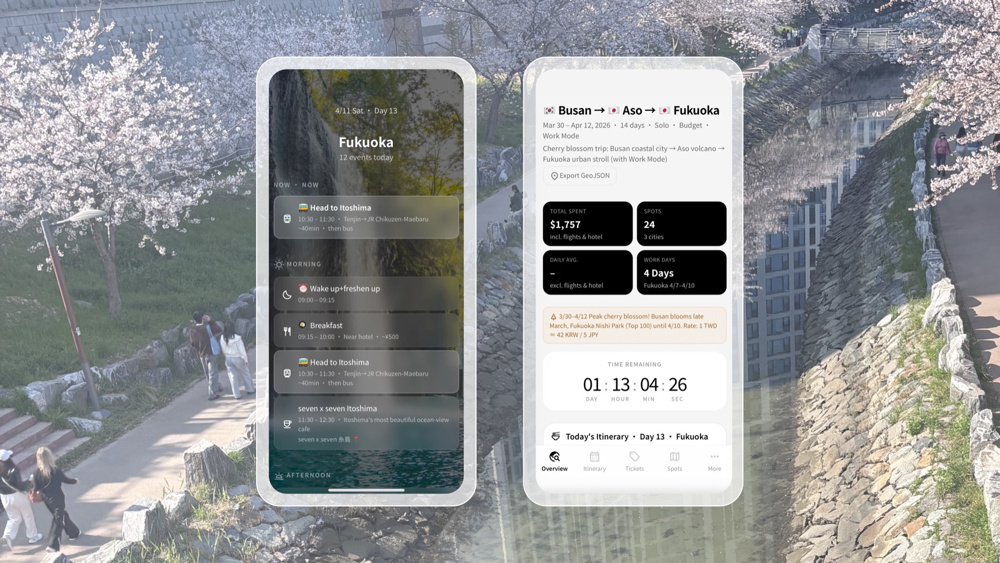
Project Origin:
As a travel enthusiast, I wanted to share my upcoming Korea → Japan trip with friends and decided to do what everyone online was doing — Vibe Code a website. But as the Claude Code trend swept the tech world, and after using Claude Code Skills extensively at work, a new idea took shape: what if I turned my trip-planning method into a structured Skill — so that anyone could become their own travel planner and set off on the journey they truly want?
My Role:
Product Designer, Full-stack Developer, AI Prompt Engineer. Claude Code Skill, MCP, HTML/CSS/JS
Timeframe:
Side Project · 2026.Mar–Present
Open Source:
In the AI era, if the design artifact (Output) is no longer the defining axis of a designer’s work, where does a designer’s value manifest? In the past, our sense of achievement came from pixel-perfect craft — grid systems, color specs, we were the “final reviewers” of product visuals and interactions. But as generative AI and Vibe Coding sweep in, when a prompt or a set of structured data can instantly produce a beautiful interface, we must honestly confront a shift: “defining problems” and “building frameworks” are becoming a designer’s most important skills.
Dialogue as Interface
Trip planning is inherently fragmented and deeply personal. People rarely want to fill cold forms, they prefer to talk through their needs. I defined conversation as the core interface. Through natural, multi-turn contextual dialogue, the AI simulates the questioning logic of a professional tour guide, progressively refining the plan, letting the interface flow with the user's thinking.
Experience-Driven
The trip webpage is just one form of visual output, the planning process itself is the soul of this product. The essence of travel lies in the experience: what do you want to feel in a foreign place? How in control of your budget do you feel? How do you balance the everyday with unexpected surprises? I placed the design emphasis on the guided conversation upfront. This isn't just data collection, it's helping users complete a deep process of self-clarification, reclaiming the spontaneous spirit of travel. Real design happens in the dialogue: clarifying intent, resolving anxiety, and ultimately sending someone on a trip that is truly their own.
What is a Skill?
An Agent Skill is a lightweight, open format for extending AI agents. Each skill is a folder with a SKILL.md instruction file — plus optional scripts, templates, and reference materials. The agent reads the instructions on demand, gaining deep, specialized capabilities while staying fast.
On the technical side, I made a core shift: abandoning rigid fill-in templates in favor of designing a structured Markdown as the semantic protocol for the UI. This MD document doesn't just carry travel information — it directly defines the orchestration logic of the UI.
Semantic Mapping
I defined a mapping ruleset where different Markdown syntax tags directly trigger specific design system components. Data tables are parsed and rendered as interactive budget dashboards with dynamic filtering. Lists, based on content characteristics, automatically render as checkbox-equipped packing checklists. Geo-links are recognized by the engine and automatically pinned on the underlying interactive map.
Data Table → Budget Dashboard
MD Syntax Renders As
────────────────────────────────── ──────────────────────────
| Item | Cost | Status | Interactive Budget Dashboard
| Flight | $420 | Confirmed | → Filter by city / category
| Hotel | $850 | Pending | Real-time totals + remaining budget
| Dining | $30 |, |Geo-link → Interactive Map
MD Syntax Renders As
────────────────────────────────── ──────────────────────────
[Tsukiji Market](geo:35.6654,139.7707) Leaflet Interactive Map
[Sensō-ji](geo:35.7148,139.7967) → Auto-pin coordinates
[Shinjuku Gyoen](geo:35.6852,139.7100) Color-coded by date + route linesGiving AI Orchestration Authority
Markdown is the AI's native language. Through MD, I handed the orchestration authority back to the AI, letting it spontaneously design the layout based on each trip's characteristics. For an international flight itinerary, the AI autonomously decides to generate a warning block. For a remote-work-focused trip, it prioritizes a Workspace Guide section. The UI structure is no longer fixed, it grows from the content.
Scenario A, International Trip (Korea → Japan)
AI detects border crossing, auto-inserts at page top:
> ⚠️ Entry Requirements
> Korea: K-ETA required (apply 72hr ahead)
> Japan: Visa-free 90 days, but fill out Visit Japan Web
> Exchange: 1 TWD ≈ 42 KRW / 5 JPY
─────────────────────────────────────────
Scenario B, Remote Work Trip (Fukuoka Work Mode)
AI detects Nomad Mode, auto-prioritizes:
## 🖥️ Workspace Guide, Fukuoka
| Location | Wi-Fi | Outlet | Hours |
| Starbucks Tenjin | 50Mbps | ✅ | 07:00–22:00 |
| &And Hostel Hakata | 80Mbps | ✅ | 24hr (guest) |
→ The UI layout isn't a fixed template, it grows from this trip's characteristicsThe system is split into two layers: a conversation orchestration layer (the trip-planner skill that guides the user through a structured multi-phase dialogue with explicit confirmation gates) and a modular skill pipeline (6 specialized sub-skills, each an independent module with its own SKILL.md, invoked conditionally by the orchestrator).
Layer 1: Conversation Orchestration
The trip-planner skill acts as the orchestrator. It guides the user through a multi-phase structured dialogue, with each phase ending in an explicit confirmation gate — the system never assumes, it always asks. Phases progress from research loading, through budget and preference gathering, to attraction selection (must-go vs. if-time-permits), then route optimization. Only after every phase is confirmed does the system proceed to generation.
Phase 0 Load Research ← auto-read travel-collector JSON
Phase 1 Gather Details ← dates, budget, style, work mode
↳ [conditional] → invoke flight-intelligence
Phase 2 Select Attractions← interactive checkbox batches
↳ must-go vs. if-time-permits
Phase 3 Route Optimization← geo-reorder + crowd-aware scheduling
Phase 4 Generate & Deploy ← ui-style → html-generator → deployer
────────────────────────────────────────────────
Each phase ends with ✓ Confirmation GateLayer 2: Modular Skill Pipeline
Each skill below is an independent module. The orchestrator invokes them conditionally — flight-intelligence only triggers when flights aren't booked; ui-style only when the user is ready to choose a visual identity. This means each module can evolve independently without affecting the others.
travel-collector → flight-intelligence → trip-planner
↓
ui-style → trip-html-generator → trip-deployer
Each module has its own SKILL.md; the orchestrator invokes conditionally:
• flight-intelligence only when flights aren't booked
• ui-style only when the user selects a visual styletravel-collector
Extracts structured data from any input — URLs, screenshots, blog posts, booking confirmations — and normalizes everything into a unified JSON research file that pre-fills the orchestrator conversation.
Input: blog URL / screenshot / booking email
↓
Output: busan-research.json
{ "pois": [...], "hotels": [...], "passes": [...] }flight-intelligence
Analyzes flight pricing patterns, seasonal trends, and festival calendars. Returns a buy-now-or-wait recommendation with interactive price visualization.
TPE → PUS Mar 30 $180 ← current
TPE → PUS avg. $210 ← 6-month average
Verdict: BUY NOW (12% below average, cherry blossom peak)trip-planner
The conversational orchestrator (Layer 1). Manages all dialogue phases, maintains cross-round context, and coordinates when to invoke other skills.
Round 1: "Solo or group?" → Solo + Work Mode
Round 2: "Budget range?" → $80-120/day excl. flights
Round 3: "Must-see?" → Cherry blossom, local food
↳ Context persists across all roundsui-style
Provides 30+ design themes (minimalist, editorial, cyberpunk, etc.). The user previews and selects before generation; the chosen style's tokens flow into the HTML generator.
After the user selects the "luxury-editorial" style, Style Tokens are injected:
--color-primary: #2C2C2C --font-heading: 'Playfair Display'
--color-accent: #C8A96E --font-body: 'Source Sans Pro'
--color-surface: #FAF7F2 --border-radius: 0px
--shadow: 0 2px 12px rgba(0,0,0,0.08)
→ These tokens are injected directly into trip-html-generator
→ Same trip data + different style = completely different visual experience
Other styles: swiss-minimalist | botanical | neo-brutalism
cyberpunk | newsprint | warm-editorial | ...trip-html-generator
Transforms confirmed trip data into a self-contained travel website with interactive maps, calendar views, expense tracking, booking status, and packing checklists. Single bundle, no server required.
busan-fukuoka-2026/
├── index.html ← tabbed UI (Overview/Itinerary/Tickets/Places/Budget)
├── style.css ← design tokens from ui-style
├── app.js ← map, calendar, budget tracker, currency switcher
└── data/trip.jsontrip-deployer
One-command deployment to GitHub Pages, Netlify, Vercel, or Cloudflare Pages. Turns the local website into a shareable live URL.
Deploy target: GitHub Pages
→ push to ralinzain-star/busan-fukuoka
→ https://ralinzain-star.github.io/busan-fukuoka/This Skill generated the travel guide I actually used: Busan & Fukuoka 14-Day Trip. Below are the core features of the generated app — each one emerged organically from the Markdown semantic protocol.
Splash & Overview Dashboard
A full-screen cover page with a personal travel photo backdrop opens to a live dashboard with four stat cards, a seconds-precision countdown, and today’s timeline. Swipe up to enter; the cover flies away with a cubic-bezier animation.
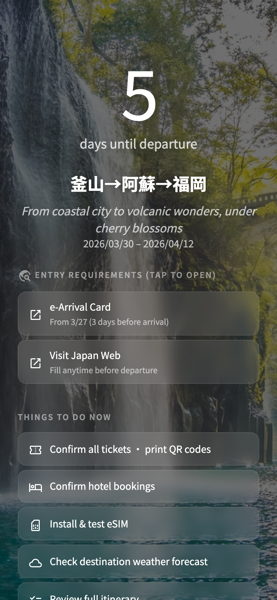
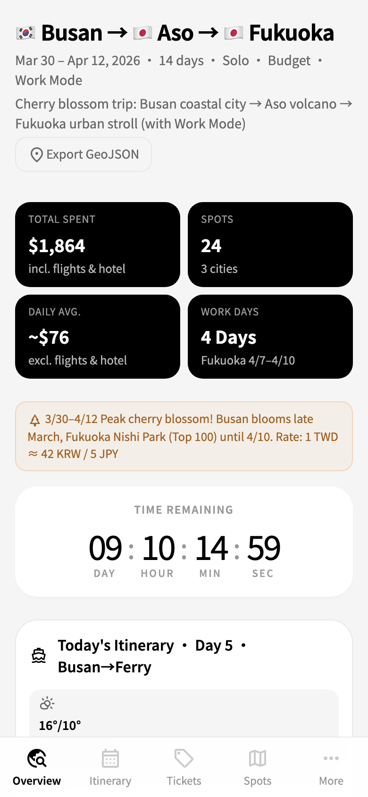
Smart Itinerary Calendar
A week-view calendar with a real-time Now Line red indicator that updates every 30 seconds. Events are color-coded across 8 categories, with embedded restaurant info, booking status icons, and dual KR/JP vs. TW clocks running side by side.
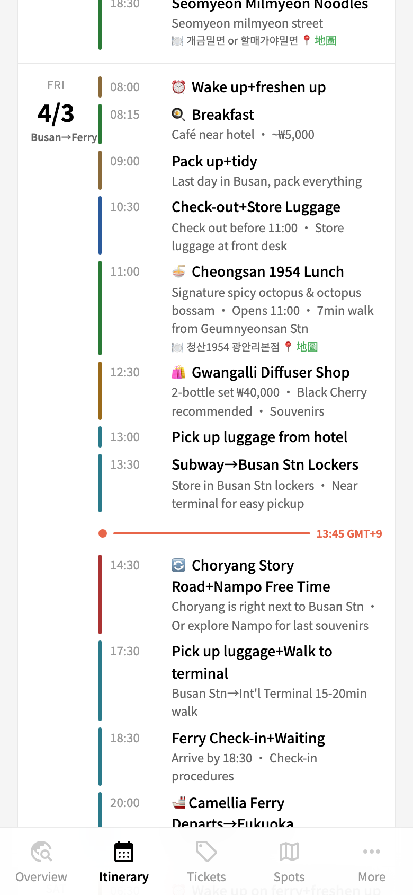
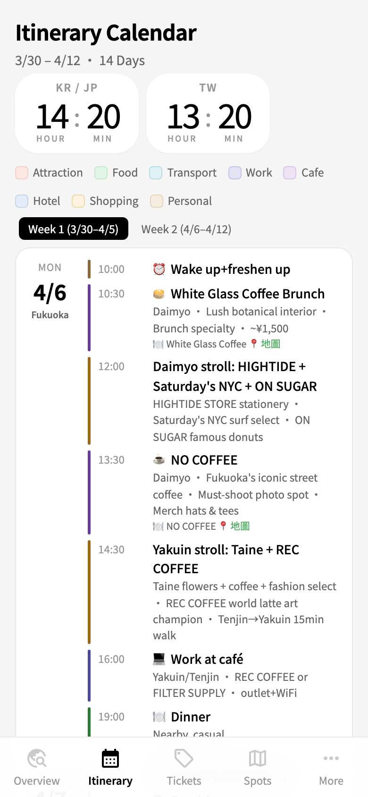
Booking Intelligence & Budget Tracker
Flight cards with route visualization and historical price analysis (green = below avg, red = above). Three-platform comparison (官網 / Klook / KKday) with lowest-price stars. Budget tracker toggles between estimated and actual modes, with four-currency switching (TWD/KRW/JPY/USD) and city/category bar charts.
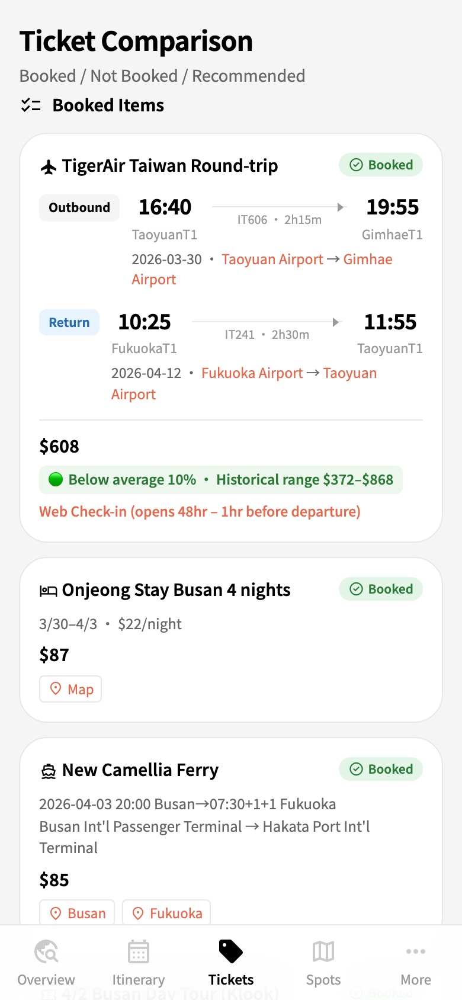
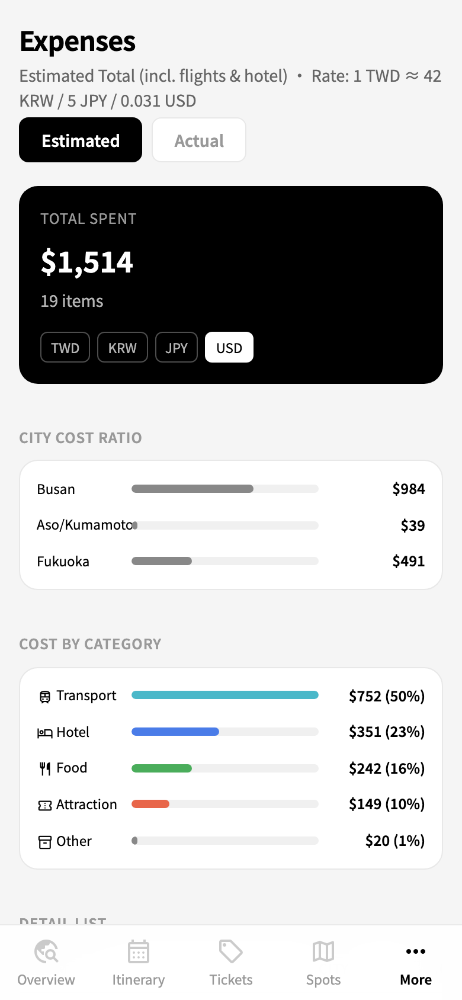
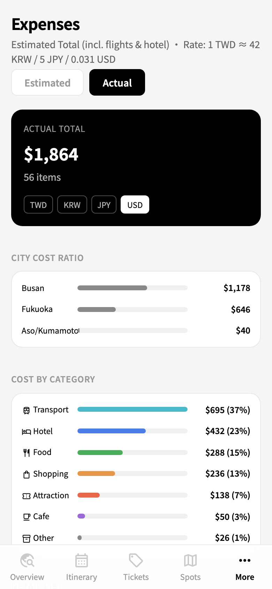
POI Map & Pre/Post-trip Tools
24 points of interest on an interactive Leaflet map with city and category filter chips, color-matched markers, and solo-traveler tips (e.g., “Sashimi platters start at 2 servings”). A six-category pre-departure checklist persists via localStorage; the post-trip Retrospective shows footprint map, budget vs. actual, and a lessons-learned change log.
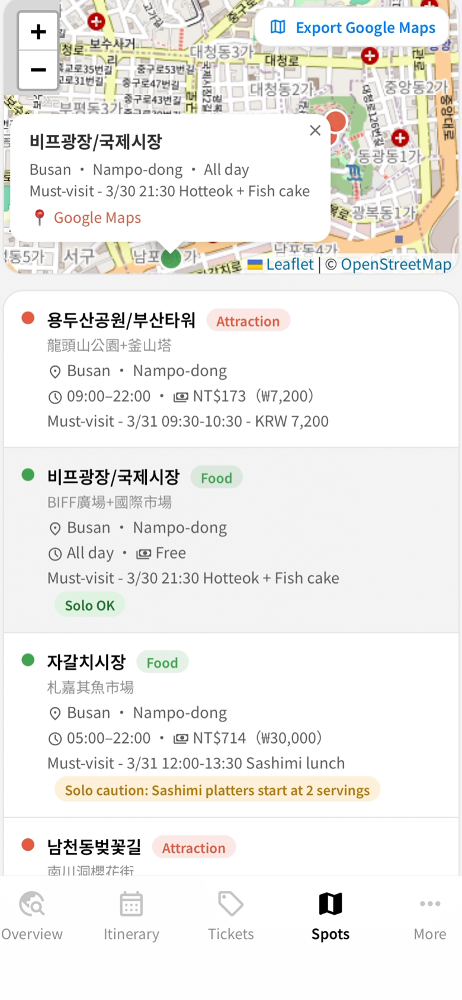
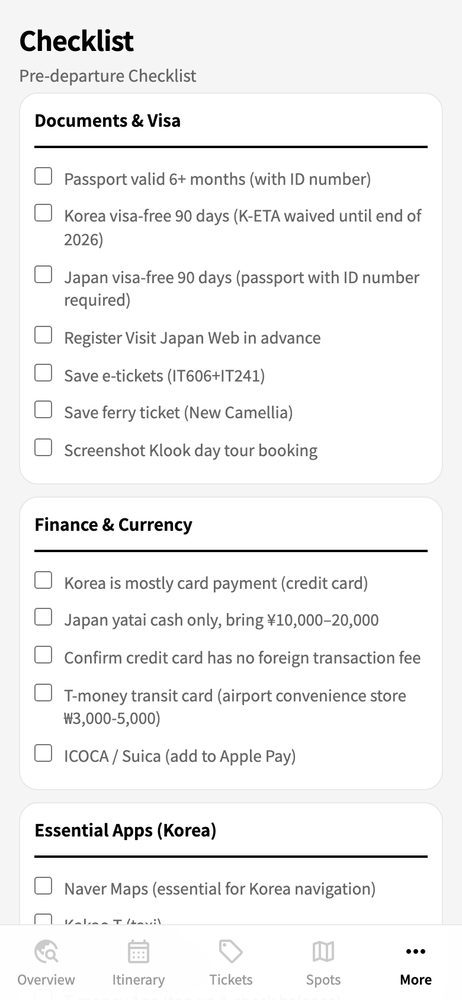
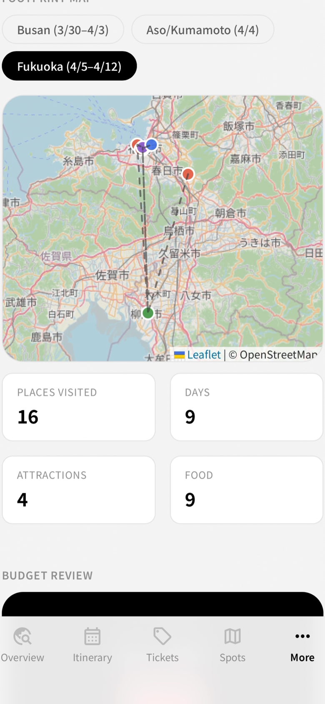
Time-aware Features & 4-Language i18n
The site adapts to “what time is it now”: a full-screen Today Overlay shifts its checklist based on days-until-departure (>7d / ≤7d / ≤3d / ≤1d). During the trip, today’s timeline dims past events and highlights the current one. All UI text, 8 category names, 14-day weather descriptions, and event titles are translated across zh-TW / English / 한국어 / 日本語 — 120+ keys, switching takes effect instantly.
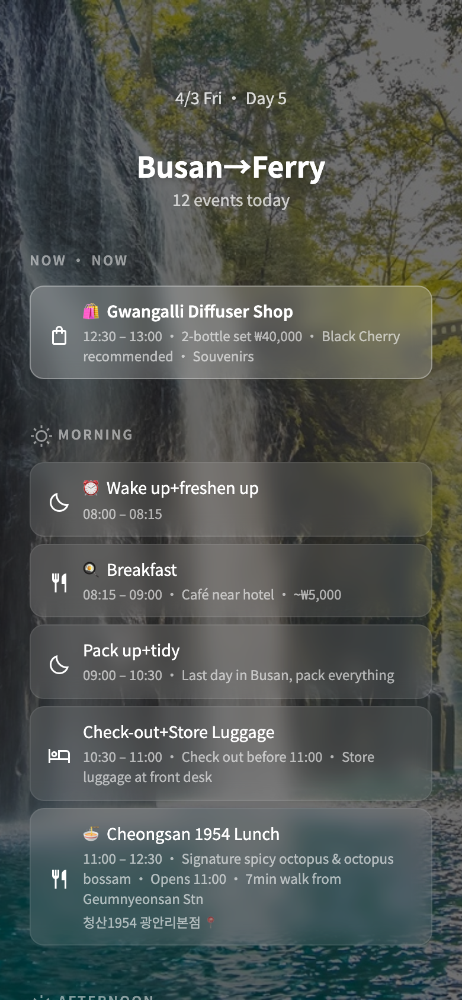
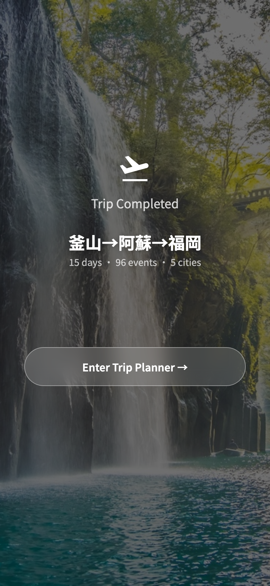
The evolution of this project is a micro-experiment in product design — constantly “returning to the essence.” It started from a technology-driven exploration and ultimately arrived at an experience-centered solution.
1. Pivot of Value
Looking back, this project went through three critical shifts in thinking:
Starting from "Vibe Coding an App"
Initially attracted by the low-barrier making power of Vibe Coding, my goal was to quickly ship a polished UI app to share my itinerary. The value at this stage was visual presentation.
Extending to a "Website-Generating Skill"
With deeper use of Claude Code, I realized systematic capability scales further than any single interface. Packaging planning logic into a Skill that lets anyone one-click deploy a site shifted the value to productivity liberation.
Finally Anchoring on "Trip Planning Itself"
Through constant testing, I discovered that visual websites and technical architecture are just means. The essence of trip planning is: how to reduce anxiety, control budgets, and balance the everyday with adventure. I anchored the planning experience and travel essence as the true value core.
2. A Miniature of Product Design Evolution
This “App → Skill → Experience” path mirrors the arc of contemporary product design. It tells us:
Returning to Design’s Origin
This project taught me: the best product lets technology elegantly disappear after completing its task.
The initial Vibe Coding enthusiasm led me into the AI world; my designer’s instinct pulled me back beyond the tech framework to the essence of travel. We are entering an era of customized UI — designers define system frameworks, AI handles execution, and users receive the purest, worry-free joy of exploration.